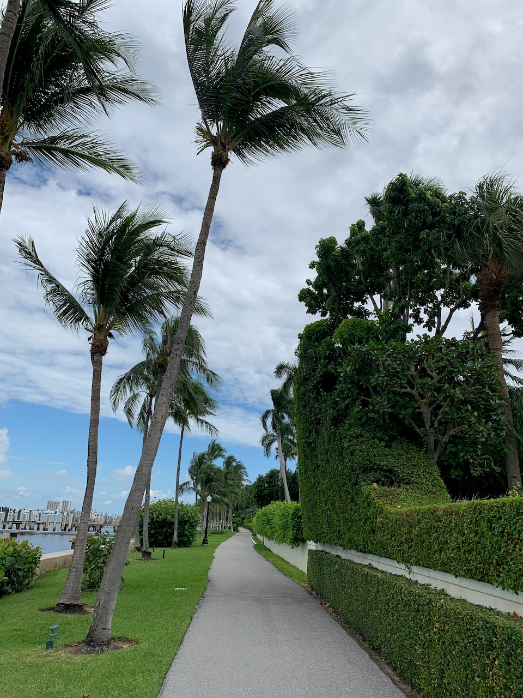

I moved to West Palm Beach at the start of this month, and soon thereafter incorporated a segment of the Lake Trail into my daily run. That southern segment between bridges still goes by a lot, including the Flagler museum, the giant kapok tree, and the Breakers golf course. I waited for a lazy sunny weekend to see what the rest of the so-called Trail of Conspicuous Consumption offered.
The answer was, kind of more of the same. A smooth paved trail on the western shore of Palm Beach island, uninterrupted by car traffic. As you ride north, the intracoastal is always immediately to your left, and hedge fences hiding mansions are immediately to your right. There are a handful of historical plaques, always seeming to describe the adjacent building as the oldest hotel in Florida. Except for the one for the oldest church.
After winding around a country club or two, the trail ends unceremoniously up by the Palm Beach inlet. You can amble through a residence to the ocean, or turn around and double back. I definitely appreciate that this is a nice, protected trail, but I don’t think I’ll ride the full length of it many more times. It did make me once again consider living on a boat when I retire, though.